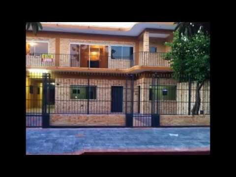
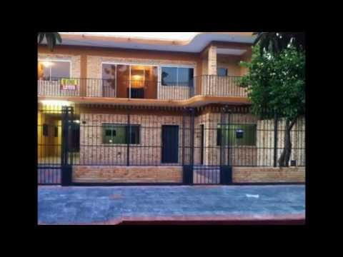

Home - Texas CASA
2020.09.21 19:06
Skip to Content Volunteer Nominate A CASA! Pay It Forward for Children Emily’s Story Learning Center Give Donate Now CASA Wishlists Pay It Forward for Children CaringCent Our Donors News & Events Covid-19 Updates Events Calendar Our Blogs Texas CASA Conference Collaborative Family Engagement Legislative Public Policy Understanding Community-Based Care 86th Legislative Session Outcomes The Capitol Beat Legislative Advocacy Teams About Leadership Staff Press Room FY19 Impact Report Careers with CASA Contact Twitter Facebook LinkedIn Pinterest YouTube SHOP Follow Us Twitter Facebook LinkedIn Pinterest YouTube SHOP Menu Strengthening the Voices of CASA Statewide Volunteer Nominate A CASA! Pay It Forward for Children Emily’s Story Learning Center Give Donate Now CASA Wishlists Pay It Forward for Children CaringCent Our Donors News & Events Covid-19 Updates Events Calendar Our Blogs Texas CASA Conference Collaborative Family Engagement Legislative Public Policy Understanding Community-Based Care 86th Legislative Session Outcomes The Capitol Beat Legislative Advocacy Teams About Leadership Staff Press Room FY19 Impact Report Careers with CASA Contact
Make a difference in a child's life. Become a CASA Volunteer!
“I trusted my CASA volunteer. She was the only person whose face I recognized after every move.”
Ashley, a former CASA youth
Learn MoreMake a Difference in a Child's Life. Become a CASA Volunteer!
By becoming a Court Appointed Special Advocate, or CASA volunteer, you can help give a voice in court to children who have been abused or neglected.
Learn MoreMake a Difference in a Child's Life. Become a CASA Volunteer!
“Texas CASA does a fantastic job of having a profound, direct impact on the children they serve. Our experience has shown that they really know how to use donations wisely and maximize the influence our gifts can have on CASA programs throughout the state.”
Jay D. Ellwanger & Christina Westfall
Learn More Get InvolvedGet Involved
Be a part of the solution!
Volunteer Take the first step to becoming a CASA advocate!
Nominate If you know someone who has what it takes to be a CASA advocate, let them know!
Donate Support Texas CASA & invest in the future of Texas' children!
Click here to view all CASA programs in Texas. For a CASA program outside of Texas, please visit the National CASA website .
Our Mission
Texas CASA’s mission is to support local CASA volunteer advocacy programs and to advocate for effective public policy for children in the child protection system.
The CASA Solution
When a family is in crisis and becomes involved in the child welfare system, a volunteer may be appointed by a judge to advocate for the child. That volunteer is called a Court Appointed Special Advocate , or CASA.
Get Involved
Stand Up for Kids in Style!
“Less Me, More We” encompasses our belief that we are at our best when we are working together as a community. When children and families are in crisis, it takes everyone doing their part to support and uplift them. Start shopping below!
Shop Now
Donate & Support Texas CASA
A donation to Texas CASA is an investment in Texas’ future. With your gift to Texas CASA, you can help the CASA program(s) both in your community AND around the state to provide the very best volunteer advocacy for children and families involved in the child welfare system.
Donate Now
Texas CASATexas CASA’s Vision and Mission
Our Vision:
We envision a safe and positive future for all Texas children.Our Mission:
The mission of Texas CASA is to support local CASA volunteer advocacy programs and to advocate for effective public policy for children in the child protection system.Navigate
Volunteer Nominate A CASA! Pay It Forward for Children Emily’s Story Learning Center Give Donate Now CASA Wishlists Pay It Forward for Children CaringCent Our Donors News & Events Covid-19 Updates Events Calendar Our Blogs Texas CASA Conference Collaborative Family Engagement Legislative Public Policy Understanding Community-Based Care 86th Legislative Session Outcomes The Capitol Beat Legislative Advocacy Teams About Leadership Staff Press Room FY19 Impact Report Careers with CASA ContactContact Us
Texas CASA
1501 West Anderson Lane, Suite B-2
Austin, Texas 78757 MAP
(844) 230-6467 or
Local (512) 473-2627
Fax: (512) 610-6134
Email: txcasa@texascasa.org
FOLLOW US
Twitter Facebook LinkedIn Pinterest YouTube SHOP
© 2020 Texas CASA | A member of the National Court Appointed Special Advocates ® Association
Texas CASA | 1501 West Anderson Lane, Suite B-2, Austin, Texas 78757 MAP
(844) 230-6467 or Local (512) 473-2627 | Fax: (512) 852-4783 | Email: txcasa@texascasa.org
Privacy Policy
- Cat mai costa sa construiesti o casa in acest an – Idei case
- Acasa - Luxor.Casa
- Casa Parfumurilor
- Casa Mea Ep 13 Online Subtitrat - Dogdugun Ev Kaderindir ...
- Case/Vile de vânzare în Braşov - Imobiliare.ro
- The Prince Of Wales's House - Accommodation & English Courses
- Casa de Asigurări de Sănătate a Municipiului București
- CASA
- Casa Trappold, Apold – Prețuri actualizate 2020
- CASA SOARELUI MURIGHIOL - Casa de vacanta in MURIGHIOL, TULCEA
- Cat mai costa sa construiesti o casa in acest an – Idei case
Imobiliare.ro este portalul în care vei găsi cele mai multe anunţuri imobiliare din Braşov, venite atât de la agenţiile imobiliare, dezvoltatori, dar şi de la particulari care preferă să îşi vândă singuri locuinţa. Ai acces la un număr impresionant de case vile de vânzare, actualizate în timp real.Găseşti atât case vile de vânzare în Braşov, cât şi case vile de ...
- Acasa - Luxor.Casa
informații pentru asigurați. date de contact casmb ***** *** transmite online *** ***** cereri/petiȚii ***** ***** verificĂ existenȚa cardului naȚional la casmb
- Casa Parfumurilor
Casa Moritz a fost construita in anul 1917 ,in stil Art Deco de catre Eduard Moritz, proprietar al Curtii de Fier Brasov in aceea perioada .Dupa 100 aceasta intra intr-o reparatie capitala si devine ceea ce este acum,pastrand frumusetea detaliilor acelei perioade atat la interior cat si la exterior.
- Casa Mea Ep 13 Online Subtitrat - Dogdugun Ev Kaderindir ...
Bun venit la Casa Razeșului! Facilitățile oferite de noi. Ultra ALLINCLUSIVE. 11 Camere disponibile. Mancare Traditionala. Calatorii in Muntii Calimani. Bar Traditional. Jacuzi in aer liber . Piscina . Restaurantul nostru. Mâncare Tradițională și un ambient plăcut.
- Case/Vile de vânzare în Braşov - Imobiliare.ro
Casa Mea Ep 13 Online Subtitrat. Urmareste aici ultimele episoade online din serialul turcesc Casa Mea / Dogdugun Ev Kaderindir ️ Casa Mea Ep 13 Online Subtitrat Acest episod este difuzat cu traducere in limba romana
- The Prince Of Wales's House - Accommodation & English Courses
Casa. All Products (445) 3,6,9 lei HP (5) ALTE CHESTII - Uite ce-i nou in magazin (33) Black Friday 2017 dama minis 20 (1) Black Friday 2017 dama minis 50 (5) Black Friday 2017 minis altele 50 (4) Black Friday 2017 minis altele 80 (2) Black Friday 2017 minis (13) Colectie Noua (6) casa-si-gradina (238) colectie-femei-barbati (375) black-friday ...
- Casa de Asigurări de Sănătate a Municipiului București
Casa Trappold se află în Apold și are un restaurant, un bar, un lounge comun și o grădină. Facilitățile oferite de proprietate includ o recepție deschisă nonstop, o bucătărie comună și WiFi gratuit în toate zonele sale.
- CASA
Casa Parfumurilor acopera multiple segmente de parfum ambiental: casă, maşină, birou, clădiri. Oferim servicii de Aroma Marketing si creare de Parfum
- Casa Trappold, Apold – Prețuri actualizate 2020
Donate & Support Texas CASA. A donation to Texas CASA is an investment in Texas’ future. With your gift to Texas CASA, you can help the CASA program(s) both in your community AND around the state to provide the very best volunteer advocacy for children and families involved in the child welfare system.
- CASA SOARELUI MURIGHIOL - Casa de vacanta in MURIGHIOL, TULCEA
Luxor Casa ofera mobila de calitate premium, accesorii de design interior si corpuri de iluminat. Viziteaza magazinul online sau showroom-ul din Ploiesti.
Imobiliare.ro este portalul în care vei găsi cele mai multe anunţuri imobiliare din Braşov, venite atât de la agenţiile imobiliare, dezvoltatori, dar şi de la particulari care preferă să îşi vândă singuri locuinţa. Ai acces la un număr impresionant de case vile de vânzare, actualizate în timp real.Găseşti atât case vile de vânzare în Braşov, cât şi case vile de ...
informații pentru asigurați. date de contact casmb ***** *** transmite online *** ***** cereri/petiȚii ***** ***** verificĂ existenȚa cardului naȚional la casmb
Casa Moritz a fost construita in anul 1917 ,in stil Art Deco de catre Eduard Moritz, proprietar al Curtii de Fier Brasov in aceea perioada .Dupa 100 aceasta intra intr-o reparatie capitala si devine ceea ce este acum,pastrand frumusetea detaliilor acelei perioade atat la interior cat si la exterior.
Bun venit la Casa Razeșului! Facilitățile oferite de noi. Ultra ALLINCLUSIVE. 11 Camere disponibile. Mancare Traditionala. Calatorii in Muntii Calimani. Bar Traditional. Jacuzi in aer liber . Piscina . Restaurantul nostru. Mâncare Tradițională și un ambient plăcut.
Casa Mea Ep 13 Online Subtitrat. Urmareste aici ultimele episoade online din serialul turcesc Casa Mea / Dogdugun Ev Kaderindir ️ Casa Mea Ep 13 Online Subtitrat Acest episod este difuzat cu traducere in limba romana
Casa. All Products (445) 3,6,9 lei HP (5) ALTE CHESTII - Uite ce-i nou in magazin (33) Black Friday 2017 dama minis 20 (1) Black Friday 2017 dama minis 50 (5) Black Friday 2017 minis altele 50 (4) Black Friday 2017 minis altele 80 (2) Black Friday 2017 minis (13) Colectie Noua (6) casa-si-gradina (238) colectie-femei-barbati (375) black-friday ...
Casa Trappold se află în Apold și are un restaurant, un bar, un lounge comun și o grădină. Facilitățile oferite de proprietate includ o recepție deschisă nonstop, o bucătărie comună și WiFi gratuit în toate zonele sale.
Casa Parfumurilor acopera multiple segmente de parfum ambiental: casă, maşină, birou, clădiri. Oferim servicii de Aroma Marketing si creare de Parfum
Donate & Support Texas CASA. A donation to Texas CASA is an investment in Texas’ future. With your gift to Texas CASA, you can help the CASA program(s) both in your community AND around the state to provide the very best volunteer advocacy for children and families involved in the child welfare system.
Luxor Casa ofera mobila de calitate premium, accesorii de design interior si corpuri de iluminat. Viziteaza magazinul online sau showroom-ul din Ploiesti.

 
